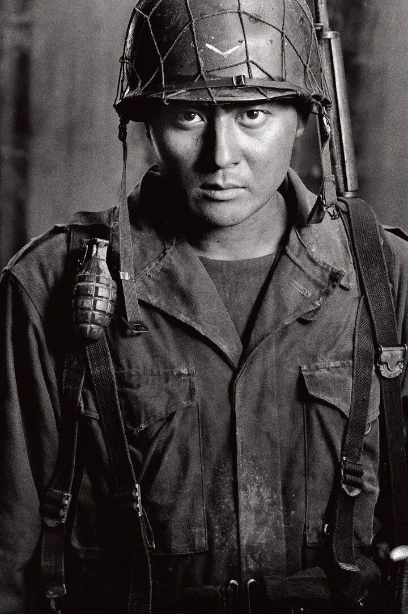
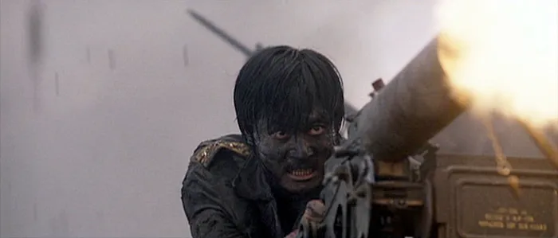
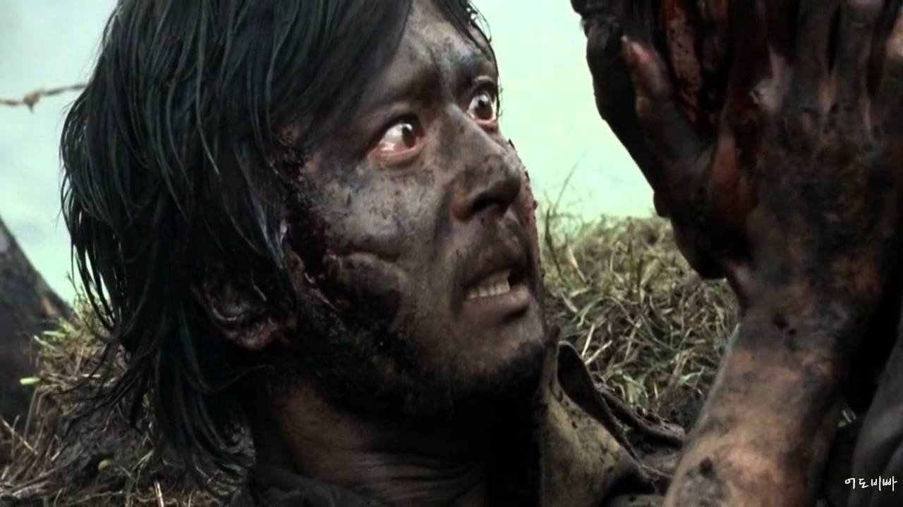
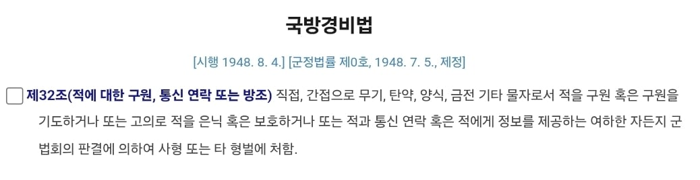
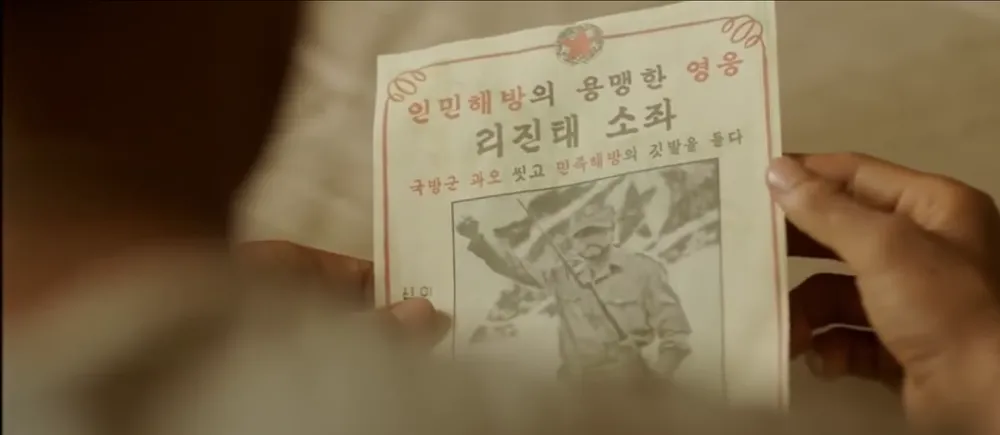
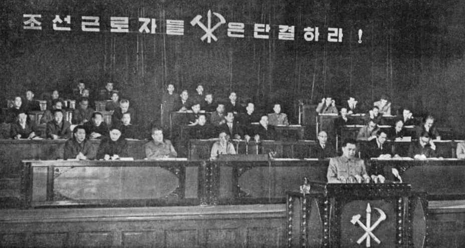

태극기 휘날리며의 주인공 '이진태'는 후반부에 동생 '이진석'이 죽은 것으로 착각해 대대장을 살해한 뒤 인민군으로 전향했음.

여기서 작품 최후반부, '이진태'는 동생 '이진석'과 재회한 뒤 인민군을 기관총으로 막다가 장렬히 전사하는데...

만약 '이진태'가 '이진석'을 따라 대한민국으로 복귀했다?

국방경비법 (군형법 전신) 제32조 위반으로 사형당할 가능성이 큰데다

재회만 하고 생존한 뒤 북한으로 복귀했다 하더라도....

3년 후 벌어질 8월 전원회의 사건에서 '남조선 종파분자'로 숙청될 가능성이 큼..... ㄹㅇ
결론) 동생을 살리기 위해 전사한게 사실상 최선의 선택이라 볼 수 있다.
진짜 마지막 저장면에서 눈물 콸콸 나옴 ㅜㅜ